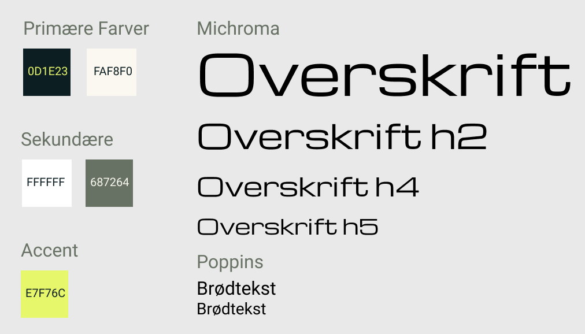

Assigment Portfolio - Styletile.
Mit styletile repræsenterer en moderne designæstetik med omhyggeligt
udvalgte skrifttyper og farver. Jeg har valgt displayfonten "Michroma"
til overskrifter for at skabe en iøjnefaldende visuel identitet, mens
sans serif fonten "Roboto" bruges til brødtekst for bedre læsbarhed.
Farvepaletten omfatter to primære farver og to sekundære farver som
komplimentere hinanden og en accentfarve i en skarp neonfarve til
kontrast for at fremhæve vigtige elementer. Jeg har i Figma lavet et
lille design hvor jeg tester min farvepalette af i forskellige
konstellationer så jeg nemt kan implementerer det gennem alle dele af
opgaven. For at finde de rigtige font størrelser har jeg benyttet
hjemmesiden typescale.
Samlet set er min løsning i overensstemmelse med
Styletilet og giver funktionel brugeroplevelse på tværs af forskellige
enheder.
